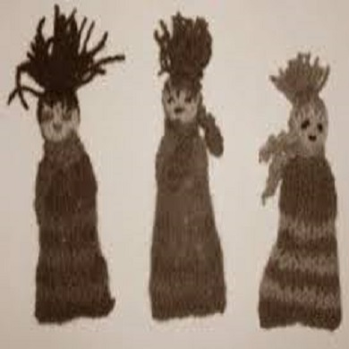

Una de nuestras tecnicas favoritas de tejido.
Es una de nuestras tecnicas favoritas ya que te ayudara a sentirte bien con uno mismo y a aumentar tu autoestima, ya que estamos creando con nuestras propias manos. Afianza la confianza en uno mismo y nos ayuda a esforzarnos y a cultivar la paciencia.
Historia de los amigurumis.
Se trata de una tecnica de origen japones basada en el diseño y confeccion de muñecos y juguetes rellennos, construidos con puntadas de crochet, empleando distintos tipos de hilados. En la raiz de esta palabra, Amigurumi, hallamos su sentido: nuigurumi: Animal relleno y ami = tejer.
